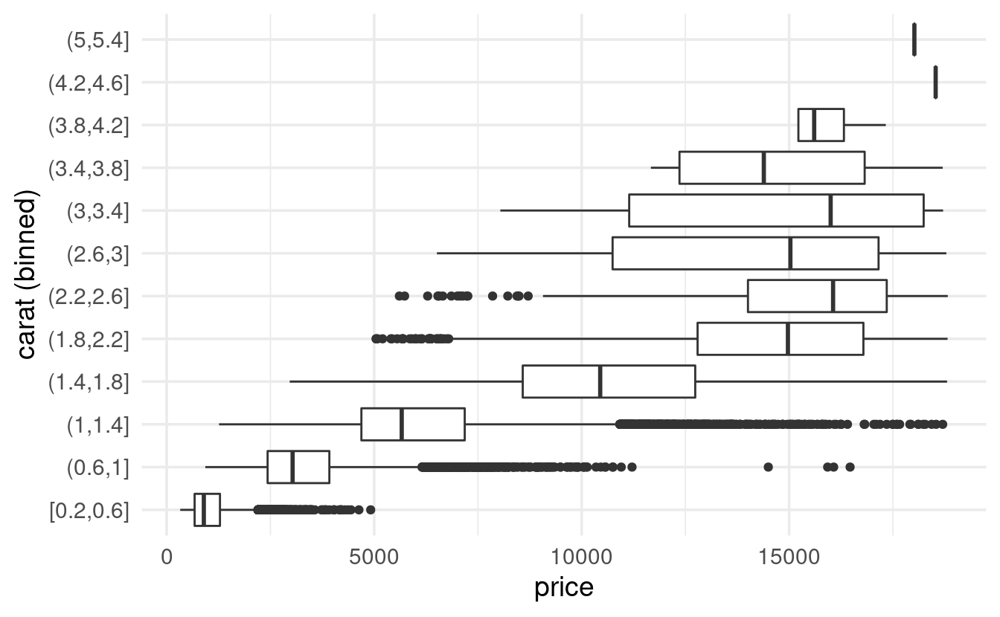
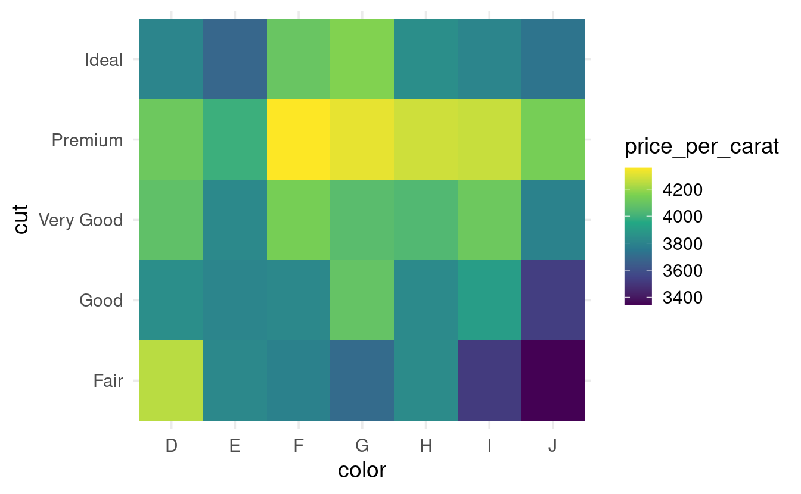

S04E16: R for Data Science - Exploratory Data Analysis II
Chapter 7.4 - 7.5: Missing Values and Covariation
Setting up
Like last time, we’ll mostly use tidyverse tools to explore the diamonds dataset, which is also part of the tidyverse.
We’ll also have one look at the flights dataset, for which we’ll need to load the nycflights13 package:
## You only need to install packages if you haven't previously done so
# install.packages("nycflights13")
# install.packages("tidyverse")
## But you'll have to load packages for every R session:
library(nycflights13)
library(tidyverse)
#> ── Attaching packages ─────────────────────────────────────── tidyverse 1.3.2 ──
#> ✔ ggplot2 3.3.6 ✔ purrr 0.3.5
#> ✔ tibble 3.1.8 ✔ dplyr 1.0.10
#> ✔ tidyr 1.2.1 ✔ stringr 1.4.1
#> ✔ readr 2.1.3 ✔ forcats 0.5.2
#> ── Conflicts ────────────────────────────────────────── tidyverse_conflicts() ──
#> ✖ dplyr::filter() masks stats::filter()
#> ✖ dplyr::lag() masks stats::lag()Let’s again take a quick look at the diamonds dataset before we begin:
diamonds
#> # A tibble: 53,940 × 10
#> carat cut color clarity depth table price x y z
#> <dbl> <ord> <ord> <ord> <dbl> <dbl> <int> <dbl> <dbl> <dbl>
#> 1 0.23 Ideal E SI2 61.5 55 326 3.95 3.98 2.43
#> 2 0.21 Premium E SI1 59.8 61 326 3.89 3.84 2.31
#> 3 0.23 Good E VS1 56.9 65 327 4.05 4.07 2.31
#> 4 0.29 Premium I VS2 62.4 58 334 4.2 4.23 2.63
#> 5 0.31 Good J SI2 63.3 58 335 4.34 4.35 2.75
#> 6 0.24 Very Good J VVS2 62.8 57 336 3.94 3.96 2.48
#> 7 0.24 Very Good I VVS1 62.3 57 336 3.95 3.98 2.47
#> 8 0.26 Very Good H SI1 61.9 55 337 4.07 4.11 2.53
#> 9 0.22 Fair E VS2 65.1 61 337 3.87 3.78 2.49
#> 10 0.23 Very Good H VS1 59.4 61 338 4 4.05 2.39
#> # … with 53,930 more rowsOn each row, we have information about one individual diamond, such as its carat and price (x, y, and z represent the diamond’s length, width, and depth, respectively).
Finally, we’ll again set a ggplot2 “theme” that is a little better-looking than the default one (this setting will apply until you restart R/RStudio):
# This changes two things:
# - theme_minimal() gives an overall different look, with a white background
# - base_size = 14 will make the text relatively bigger
theme_set(theme_minimal(base_size = 14))Chapter 7.4: Missing values
Removing outliers
Let’s assume you have established that certain outlier values in your data are untrustworthy. For instance, see the plot below for the diamonds data, a scatterplot of diamond width (y) versus depth (z):
ggplot(data = diamonds,
mapping = aes(x = z, y = y)) +
geom_point()
Three rather extreme outliers deviate not just in their absolute values, but also in their relative values: overall, depth and width are strongly correlated, yet the extremely large z value does not correspond to a large y value at all (and so on for the other outliers).
To get rid of outliers in your dataset, you have two main options. First, you could completely remove rows that contain outliers, for example with dplyr’s filter() function:
# Remove rows for which column y is smaller than 3 or larger than 20:
diamonds_no_outliers <- diamonds %>% filter(y < 3 | y > 20)But you may not want throw out entire rows, because the values for the other variables (columns) in these rows might be valid and valuable. Therefore, an alternative is to convert outliers to NAs (missing values), and a convenient way to do that is with the ifelse() function:
More on ifelse()
To better understand ifelse(), a simple example may help. First, we create a vector with integers from 1 to 10:
x <- 1:10
x
#> [1] 1 2 3 4 5 6 7 8 9 10The following expression will return a logical vector that indicates, for each value of x, whether it is smaller than 5:
x < 5
#> [1] TRUE TRUE TRUE TRUE FALSE FALSE FALSE FALSE FALSE FALSEWe can use that expression as the test in ifelse(), and turn values smaller than 5 into NA (yes = NA), while leaving the other values unchanged (no = x):
ifelse(test = x < 5, yes = NA, no = x)
#> [1] NA NA NA NA 5 6 7 8 9 10Comparing observations with and without missing data
It can be useful to compare distributions among rows with and without missing values. To do that, we can first create a new column that indicates whether a value for a variable of interest is missing or not. Then, we can map an aesthetic like color to this missing-or-not column to show the two groups separately.
Below, we’ll compare flights with and without missing values for departure time (dep_time), i.e. cancelled and not-cancelled flights, using the geom geom_freqpoly that we also saw last time:
flights %>%
mutate(cancelled = is.na(dep_time)) %>%
ggplot(mapping = aes(x = sched_dep_time, color = cancelled)) +
geom_freqpoly(binwidth = 100) # (100 = 1 hour, so we plot by hour)

However, the large difference in the absolute counts of cancelled versus not-cancelled flights makes it hard to see relative differences along the x-axis.
We can use geom_density() to produce a density plot, where the height of the lines is only determined by the relative counts, allowing us to see if cancelled flights have a different distribution:
flights %>%
mutate(cancelled = is.na(dep_time)) %>%
ggplot(mapping = aes(x = sched_dep_time, color = cancelled)) +
geom_density()
It looks like flights at the end of the day are much more commonly cancelled than those early on, which is what we might have expected.
Chapter 7.5: Covariation
This section of the book covers the exploration of covariation among two variables. For example, is there a relationship between the cut and the price of a diamond (a categorical and continuous variable)? Or an association between the cut and color of a diamond (two categorical variables)? Or between the carat and the price of a diamond (two continuous variables)?
7.5.1: A categorical and continuous variable
In out last plot above, we already explored the relationship between a categorical variable (cancelled & not-cancelled flights) and a continuous one (departure time), and we did so with so with a frequency polygon (geom_freqpoly).
Let’s see another example, this time for the diamonds dataset, to examine whether prices differ among diamond cuts:
ggplot(data = diamonds,
mapping = aes(x = price, color = cut)) +
geom_density()
A boxplot is another classic way to show the relationship between a categorical and a continuous variable. The book has a good explanation of what the components of a boxplot (box, median line, whiskers, outliers) represent. Let’s make a boxplot of diamond price by cut:
# To make the plot better-looking, and to see the same colors as above,
# we'll also map the fill aesthetic to cut:
ggplot(data = diamonds,
mapping = aes(x = cut, y = price, fill = cut)) +
geom_boxplot() +
guides(fill = "none") # Just to turn the legend for fill off

A less formal, but sometimes more informative variant of this type of plot is a violin plot, where the width represents the number of data points:
ggplot(data = diamonds,
mapping = aes(x = cut, y = price, fill = cut)) +
geom_violin() +
guides(fill = "none") # Just to turn the legend for fill off

7.5.2: Two categorical variables
As the books says,
To visualise the covariation between categorical variables, you’ll need to count the number of observations for each combination.
A quick way to do that is with geom_count():
ggplot(data = diamonds,
mapping = aes(x = color, y = cut)) +
geom_count()
A heatmap is a slightly more visually appealing way to plot this. We can create one using geom_tile() by first calculating the counts ourselves, and then mapping these counts to the fill color of the tiles:
diamonds %>%
count(color, cut) %>% # This will create a column 'n' with the counts
ggplot(mapping = aes(x = color, y = cut, fill = n)) +
geom_tile()
7.5.3: Two continuous variables
Visualizing the relationship between two continuous variables is perhaps the most intuitive of the variable type combinations. It can be done with simple scatterplots (geom_point()), of which we have already seen a couple of examples.
The books covers a few strategies that can be useful when dealing with large datasets, when relationships may be hidden due to overplotting. Consider the relationship between the carat (weight) and price of diamonds:
ggplot(data = diamonds,
mapping = aes(x = carat, y = price)) +
geom_point()
There is clearly some overplotting going on here, with areas of solid black – though this type of thing can get a lot worse. Here, the overall pattern is still apparent.
Making points transparent is one strategy to more clearly see patterns in the data in the face of overplotting:
# An alpha of 1 (the default) is opaque and an alpha of 1 is transparent
ggplot(data = diamonds,
mapping = aes(x = carat, y = price)) +
geom_point(alpha = 0.01)
Two other strategies covered in the book are:
-
Use a geom that does 2-dimensional binning for you (e.g.
geom_bin2d). -
Bin one of the continuous variables, effectively turning it into a categorical variable, so that we can use plot types like boxplots. You’ll try that in the exercises.
Breakout Rooms
All the exercises use the diamonds dataset. After loading the tidyverse, this dataset should be available to you.
Exercise 1
Use the function cut_number() to divide the carat values into 10 bins, and create a boxplot of diamond prices for each of these bins.
Tip: If you can’t read the x-axis labels (bin names) in the resulting plot because they overlap, consider flipping the plot: simply swap the x and y aesthetic assignments (alternatively, use the stand-alone function coord_flip()).
Hints (click here)
-
Run
?cut_numberto see the documentation for this function. -
You can start by creating a binned column with
mutate()andcut_number(carat, n = 10), or you can create the bins “on the fly”, by simply usingcut_number(carat, n = 10)as thexoryaesthetic.
Solution (click here)
To be able to read the axis labels, I moved carat to the y axis (and I also added a y-axis label):
diamonds %>%
ggplot(mapping = aes(y = cut_number(carat, n = 10), x = price)) +
geom_boxplot() +
labs(y = "carat (binned)")
The book has a different way of doing this, using the group aesthetic. This is less intuitive but has the advantage of keeping the carat axis labels as if it still were a regular continuous variable. It also makes the width of the boxes represent the width of the bins, which you may or may not like:
diamonds %>%
ggplot(mapping = aes(x = carat, y = price)) +
geom_boxplot(mapping = aes(group = cut_number(carat, n = 10)))
Alternatively, if you want to have control over the ranges that the bins cover (but not over the number of points in each bin), you can use the cut_width() function:
diamonds %>%
ggplot(mapping = aes(y = cut_width(carat, width = 0.4), x = price)) +
geom_boxplot() +
labs(y = "carat (binned)")

In that case, consider using varwidth = TRUE to make the width of the boxes to reflect the number of data points:
Exercise 2
-
Create a heatmap (
geom_tile()) that shows the mean diamond price for each diamond color and cut combination (you’ll have to compute the mean price first). -
From your heatmap, would you say that going from color
D=>Jis associated with an increase or a decrease in the mean price?
Tip: add + scale_fill_viridis_c() to your code for a much nicer color scale.
Hints (click here)
-
In the heatmap, you’ll want
coloralong thexaxis andcutalong theyaxis (or vice versa), and you’ll want tofillthe tiles by the mean price. -
You’ll first have to compute the mean diamond price for each of the
color-cutcombinations: usegroup_by()and thensummarize().
Solution just for getting the mean price (click here)
diamonds %>%
group_by(color, cut) %>%
summarize(price = mean(price))
#> `summarise()` has grouped output by 'color'. You can override using the
#> `.groups` argument.#> # A tibble: 35 × 3
#> # Groups: color [7]
#> color cut price
#> <ord> <ord> <dbl>
#> 1 D Fair 4291.
#> 2 D Good 3405.
#> 3 D Very Good 3470.
#> 4 D Premium 3631.
#> 5 D Ideal 2629.
#> 6 E Fair 3682.
#> 7 E Good 3424.
#> 8 E Very Good 3215.
#> 9 E Premium 3539.
#> 10 E Ideal 2598.
#> # … with 25 more rowsFull solution (click here)
diamonds %>%
group_by(color, cut) %>%
summarize(price = mean(price)) %>%
ggplot(mapping = aes(x = color, y = cut, fill = price)) +
geom_tile() +
scale_fill_viridis_c()
#> `summarise()` has grouped output by 'color'. You can override using the
#> `.groups` argument.It looks like going from color D to J is associated with an overall increase in the mean price of diamonds.
Exercise 3
-
Make a plot to visualize the relationship between
colorandcarat. -
Seeing this relationship, and knowing that
caratandpriceare strongly related (see the scatterplots above), do you think this might have influenced (confounded) the apparent relationship betweencolorandprice? -
How could you quickly create a price index that controls for
carat? Make a heatmap with that price index instead of the raw price.
Hints (click here)
-
Use a boxplot, violin plot and/or a density plot to visualize the relationship between
colorandcarat. -
If higher carats are causally associated with higher prices, and certain colors have higher mean carats than others, it is not fair to look at the effect of color on price without somehow taking carat into account.
-
A simple way of taking carat into account is by using “price per carat” (price divided by carat) rather than the raw price in your heatmap.
Solution (click here)
- To visualize the relationship between
colorandcarat, you could for example use a boxplot and/or a density plot:
diamonds %>%
ggplot(aes(x = color, y = carat)) +
geom_boxplot()
diamonds %>%
ggplot(aes(x = carat, color = color)) +
geom_density()
-
It looks like going from
D=>J,caratis typically higher. -
Since
caratis strongly positively associated withprice, it is not fair to compare prices among colors without controlling forcarat. -
A simple way to do so is dividing
pricebycaratto create an index that represents the “price per carat”. Then, you can use that index instead of the raw price in your heatmap:
diamonds %>%
group_by(color, cut) %>%
mutate(price_per_carat = price / carat) %>%
summarize(price_per_carat = mean(price_per_carat)) %>%
ggplot(mapping = aes(x = color, y = cut, fill = price_per_carat)) +
geom_tile() +
scale_fill_viridis_c()
#> `summarise()` has grouped output by 'color'. You can override using the
#> `.groups` argument.
- Now, it looks like going from
D=>Jis associated with a decrease rather than an increase in the mean price!
Exercise 4 (bonus)
To get another perspecective on the relationship between color, carat, and price (see the previous exercise), modify the earlier scatterplot of carat and price simply by mapping diamond color to the color aesthetic.
Solution (click here)
A scatterplot of carat and price that includes diamond color confirms that D diamonds are more expensive than J diamonds (and so on) once you take carat into account:
diamonds %>%
ggplot(aes(x = carat, y = price, color = color)) +
geom_point()
Bonus: (re)ordering factor levels
In the plots with diamond cut, you might have noticed that the cuts are ordered in a custom, sensible way rather than alphabetically. This is possible because the cut column has the data type factor.
If we convert cut to a regular character data type, the custom order disappears (it is now ordered alphabetically):
diamonds %>%
mutate(cut = as.character(cut)) %>%
ggplot(mapping = aes(x = cut, y = price)) +
geom_boxplot()
We could set a different custom order using the levels argument of the factor function (the same code would work if cut would not yet have been a factor at all):
cut_order <- c("Very Good", "Fair", "Good", "Ideal", "Premium")
diamonds %>%
mutate(cut = factor(cut, levels = cut_order)) %>%
ggplot(mapping = aes(x = cut, y = price)) +
geom_boxplot()

Or, you could make the order of the factor levels depend on the data (!):
diamonds %>%
mutate(cut = reorder(cut, price, FUN = median)) %>%
ggplot(mapping = aes(x = cut, y = price)) +
geom_boxplot()